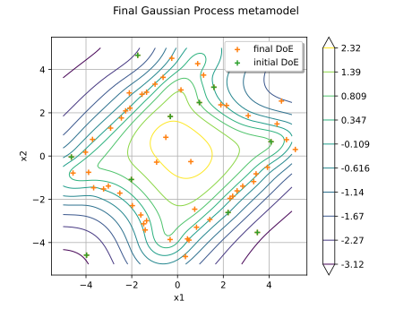
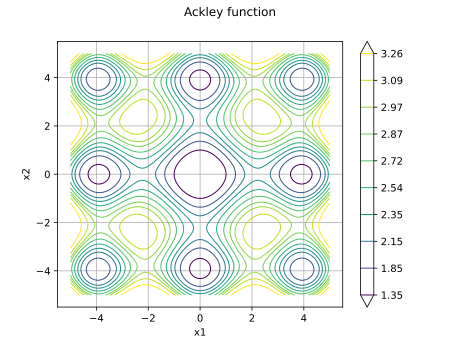

ActiveLearningReliabilityAlgorithm¶
- class ActiveLearningReliabilityAlgorithm(*args)¶
Active learning reliability algorithm.
Warning
This class is experimental and likely to be modified in future releases. To use it, import the
openturns.experimentalsubmodule.Consider the following reliability analysis problem to solve:
![P_f = \Prob{\model\left( \inputRV \right) \leq T}]()
![\inputRV]() is the input random vector of dimension
is the input random vector of dimension ![\inputDim]() ,
, ![f_\inputRV (\mathbf{x})]() its joint density probability function.
its joint density probability function. ![\model(\cdot)]() is the limit state function of the model.
is the limit state function of the model.
![D_f = \{\inputRV \in \mathbb{R}^\inputDim \, \vert \, \model(\inputRV) \leq T\}]() is the domain definition of the event to consider (failure).
is the domain definition of the event to consider (failure). ![\model(\cdot) = T]() is called the limit state.
is called the limit state.The failure condition can also be
![\model(\inputRV)\geq T]() , see
, see ThresholdEvent.The probability of failure can be defined as follows :
![P_f = \Prob{\model(\inputRV)\leq T}= \int_{D_f} f_\inputRV(\mathbf{x}) d\mathbf{x}]()
This probability can also be written as :
![P_f = \int_{\mathbb{R}^{\inputDim}} \mathbf{1}_{ \left\{ \model(\inputRV) \leq T \right\} }f_\inputRV(\mathbf{x}) d\mathbf{x}]()
with
![\mathbf{1}_{ \left\{ \model(\cdot) \leq T \right\} }]() the failure indicator function. In case of reliability analysis involving numerically costly simulation code, one may be interested in substituting by a metamodel that is cheaper to evaluate. Active-learning reliability analysis consists in substituting the limit state function by a surrogate model (often a Gaussian process regressor) and refining the surrogate model for the reliability analysis purpose. In case of threshold event simulation, the surrogate model has to be accurate in the zones that are relevant to the failure probability estimation i.e., in the vicinity of threshold
the failure indicator function. In case of reliability analysis involving numerically costly simulation code, one may be interested in substituting by a metamodel that is cheaper to evaluate. Active-learning reliability analysis consists in substituting the limit state function by a surrogate model (often a Gaussian process regressor) and refining the surrogate model for the reliability analysis purpose. In case of threshold event simulation, the surrogate model has to be accurate in the zones that are relevant to the failure probability estimation i.e., in the vicinity of threshold ![T]() and in the high probability content regions. The use of the exact function and its surrogate
and in the high probability content regions. The use of the exact function and its surrogate ![\hat{\model}(\cdot)]() in the probability calculation will lead to the same result if
in the probability calculation will lead to the same result if
![\forall \mathbf{x} \in \mathbb{R}^{\inputDim}, \mathbf{1}_{\model(\mathbf{x})<T} = \mathbf{1}_{\hat{\model}(\mathbf{x})<T}]() with
with ![\hat{\model}]() the surrogate model of
the surrogate model of ![\model]() .
.Active-learning methods consist in refining only the samples (generated by the simulation algorithm) that are uncertain with respect the threshold crossing in order to limit the uncertainty provided by the metamodel to the failure probability. The goal is to minimize the number of samples that have to be evaluated on the simulation code in the probability simulation.
From the initial training set
![\mathcal{X}]() , the Gaussian process properties (i.e. estimation of the predicted error variance) are valuable to determine the additional samples which have to be evaluated on to refine the surrogate model. Different refinement strategies have been developed in the literature (see [moustapha2019] for a survey).
, the Gaussian process properties (i.e. estimation of the predicted error variance) are valuable to determine the additional samples which have to be evaluated on to refine the surrogate model. Different refinement strategies have been developed in the literature (see [moustapha2019] for a survey).The
ActiveLearningReliabilityAlgorithmallows one to couple different simulation algorithms (ProbabilitySimulationAlgorithmusingMonteCarloExperiment,NAIS,StandardSpaceCrossEntropyImportanceSampling,PhysicalSpaceCrossEntropyImportanceSamplingorSubsetSampling) with dedicated refinement criteria (also named as infill criteria, seeActiveLearningUFunction,ActiveLearningEFFFunctionorActiveLearningGMMFunction). Customized infill criteria can be implemented following the template given in Custom active learning criterion for reliability analysis.The
ActiveLearningReliabilityAlgorithmoffers a unified API for testing all the reliability algorithms and infill criteria. Different stopping criteria have also been implemented.The main usage of
ActiveLearningReliabilityAlgorithmis composed of different steps that are:0 - Define a Design of Experiments (DoE) and evaluate the simulation code
1 - Train a Gaussian Process Regressor (GPR) on the current DoE
2 - Perform a probability simulation on the GPR
3 - Evaluate the candidate sample on an infill criterion
4 - Select the most informative sample based on the infill criterion
5 - Evaluate the simulation code on this sample
6 - Update the DoE and retrain the GPR
7 - Check a convergence criterion
The steps 2 to 7 are repeated until convergence.
Different stopping criteria have been implemented. The first one is based on the simulation budget (maximal number of calls of the simulation code). The second one is based on the infill criterion (see
ActiveLearningUFunction,ActiveLearningEFFFunctionorActiveLearningGMMFunction). The third one is based on the uncertainty of probability (or reliability index) due to the use of the GPR. The fourth one is based on the stability of the probability estimate (or reliability index) between two iterations of the active learning reliability algorithm. The convergence criterion can be set with the setConvergenceCriterion method, with dedicated flags:PROBABILITY_UNCERTAINTY : convergence based on the uncertainty of probability estimate due to the Gaussian process
RELIABILITY_INDEX_UNCERTAINTY : convergence based on the uncertainty of reliability index estimate due to the Gaussian process
ACTIVE_LEARNING : convergence based on the active learning
PROBABILITY_STABILITY : convergence based on the stability of probability estimate between two active learning iterations
RELIABILITY_INDEX_STABILITY : convergence based on the stability of reliability index estimate between two active learning iterations
The reported estimate is surrogate-based (standard AK-MCS practice); no true-model correction step is applied.
The design of experiment and the surrogate specification are sourced from the Gaussian process fitter once at construction: the input/output designs through the fitter samples, the covariance model and the trend basis through its result (optimized state if the fitter already ran, used as warm start for the refits; an untrained fitter is run implicitly, at the cost of a hyperparameter optimization). Later user-side retrains of the fitter are ignored. The true event is sourced from the wrapped simulation.
- Parameters:
- fitter
GaussianProcessFitter Parameterized Gaussian process fitter providing the initial design of experiment, the covariance model and the trend basis
- simulation
EventSimulation Wrapped simulation algorithm of any concrete type (Monte Carlo,
NAIS,SubsetSampling, cross-entropy importance sampling, …), also providing the true event. It is deep-copied at construction and retargeted at each iteration, so the caller object is never mutated.- criterion
ActiveLearningReliabilityFunction Active learning (infill) criterion, e.g.
ActiveLearningUFunction,ActiveLearningEFFFunctionorActiveLearningGMMFunction. It is cloned at construction and refreshed from each refit.
- fitter
Methods
drawProbabilityConvergence(*args)Draw the probability convergence at a given level.
getBasis()Accessor to the trend basis of the Gaussian process surrogate.
Accessor to the block size.
Accessor to the object's name.
Accessor to the convergence strategy.
Accessor to the covariance model of the Gaussian process surrogate.
Accessor to the learning criterion.
getEvent()Accessor to the event.
Accessor to the number of limit state function calls performed during enrichment.
Accessor to the convergence flag of the last run.
Accessor to Design of experiments input sample
Accessor to input sample.
Accessor to the maximum coefficient of variation.
Accessor to the maximum number of limit state function calls used for enrichment.
Accessor to the maximum iterations number.
Accessor to the maximum standard deviation.
Accessor to the maximum duration.
getName()Accessor to the object's name.
Accessor to Design of experiments output sample
Accessor to Active Reliability algorithm result
Accessor to the last inner simulation algorithm.
Accessor to random generator seed for the simulation algorithm.
Accessor to the per-iteration simulation results stored in the result.
hasName()Test if the object is named.
run()Launch simulation.
setBlockSize(blockSize)Accessor to the block size.
setConvergenceCriterion(*args)Accessor to convergence criterion.
Accessor to the convergence uncertainty threshold.
setConvergenceStrategy(convergenceStrategy)Accessor to the convergence strategy.
Accessor to the convergence uncertainty factor.
setCriterion(criterion)Accessor to the learning criterion.
setEvent(event)Accessor to the event.
setKeepSample(arg2)Accessor to keepSample parameter.
Accessor to the maximum coefficient of variation.
setMaximumIterations(maximumIterations)Accessor to the maximum number of limit state function calls used for enrichment (the active learning budget).
setMaximumOuterSampling(maximumOuterSampling)Accessor to the maximum iterations number.
Accessor to the maximum standard deviation.
setMaximumTimeDuration(maximumTimeDuration)Accessor to the maximum duration.
setName(name)Accessor to the object's name.
setProgressCallback(*args)Set up a progress callback.
Accessor to random generator seed for the simulation algorithm.
setStopCallback(*args)Set up a stop callback.
See also
Notes
The following
ResourceMapkeys are used:ActiveLearningReliabilityAlgorithm-DefaultSimulationAlgorithmSeed(UnsignedInteger, default:0): seed of the random generator used before each inner simulation run.ActiveLearningReliabilityAlgorithm-DefaultConvergenceUncertaintyFactor(Scalar, default:2.0): multiplicative factor of the Gaussian process standard deviation used to build the confidence interval of the probability estimate.ActiveLearningReliabilityAlgorithm-DefaultMaximumIterations(UnsignedInteger, default:100): default enrichment budget.
Each call to
run()restarts from the initial design of experiment, so repeated runs give the same enrichment history for the same seed and criterion.The simulation settings (maximum outer sampling, block size, coefficient of variation, standard deviation, convergence strategy) are forwarded to the wrapped simulator and configure the inner probability simulations. The active learning loop itself is bounded by
setMaximumIterations().- __init__(*args)¶
- drawProbabilityConvergence(*args)¶
Draw the probability convergence at a given level.
- Parameters:
- levelfloat, optional
The probability convergence is drawn at this given confidence length level. By default level is 0.95.
- Returns:
- grapha
Graph probability convergence graph
- grapha
- getBasis()¶
Accessor to the trend basis of the Gaussian process surrogate.
- Returns:
- basis
Basis Trend basis
- basis
- getBlockSize()¶
Accessor to the block size.
- Returns:
- blockSizeint
Number of simultaneous evaluations of the limit-state function. It is set by default to 1.
- getClassName()¶
Accessor to the object’s name.
- Returns:
- class_namestr
The object class name (object.__class__.__name__).
- getConvergenceStrategy()¶
Accessor to the convergence strategy.
- Returns:
- storage_strategy
HistoryStrategy Storage strategy used to store the values of the probability estimator and its variance during the simulation algorithm.
- storage_strategy
- getCovarianceModel()¶
Accessor to the covariance model of the Gaussian process surrogate.
- Returns:
- covarianceModel
CovarianceModel Covariance model
- covarianceModel
- getCriterion()¶
Accessor to the learning criterion.
- Returns:
- criterion
ActiveLearningReliabilityFunction Copy of the learning criterion, dynamic type preserved.
- criterion
- getEvent()¶
Accessor to the event.
- Returns:
- event
RandomVector Event we want to evaluate the probability.
- event
- getFunctionCallNumber()¶
Accessor to the number of limit state function calls performed during enrichment.
- Returns:
- functionCallint
Number of true limit state function evaluations performed after the initial design of experiment. A criterion that returns several infill points per iteration increments this number by the size of the returned sample.
- getHasConverged()¶
Accessor to the convergence flag of the last run.
- Returns:
- hasConvergedbool
True if the selected convergence criterion was satisfied within the iteration budget, false otherwise. This is not restricted to learning convergence: the probability uncertainty, reliability index uncertainty and stability criteria also set this flag when they are selected.
- getInputDoE()¶
Accessor to Design of experiments input sample
- Returns:
- inputSample
Sample Design of experiments, input sample
- inputSample
- getMaximumCoefficientOfVariation()¶
Accessor to the maximum coefficient of variation.
- Returns:
- coefficientfloat
Maximum coefficient of variation of the simulated sample.
- getMaximumIterations()¶
Accessor to the maximum number of limit state function calls used for enrichment.
- Returns:
- maximumIterationsint
Maximum number of limit state function calls used for enrichment
- getMaximumOuterSampling()¶
Accessor to the maximum iterations number.
- Returns:
- outerSamplingint
Maximum number of iterations, each iteration performing a block of evaluations.
- getMaximumStandardDeviation()¶
Accessor to the maximum standard deviation.
- Returns:
- sigmafloat,
![\sigma > 0]()
Maximum standard deviation of the estimator.
- sigmafloat,
- getMaximumTimeDuration()¶
Accessor to the maximum duration.
- Returns:
- maximumTimeDurationfloat
Maximum optimization duration in seconds.
- getName()¶
Accessor to the object’s name.
- Returns:
- namestr
The name of the object.
- getOutputDoE()¶
Accessor to Design of experiments output sample
- Returns:
- outputSample
Sample Design of experiments, output sample
- outputSample
- getResult()¶
Accessor to Active Reliability algorithm result
- Returns:
- result
ActiveLearningReliabilityResult Result of active learning algorithm
- result
- getSimulationAlgorithm()¶
Accessor to the last inner simulation algorithm.
- Returns:
- simulationAlgorithm
EventSimulation Last inner simulation, retargeted on the surrogate event at each iteration. It is a deep copy owned by the algorithm, not the caller object.
- simulationAlgorithm
- getSimulationAlgorithmSeed()¶
Accessor to random generator seed for the simulation algorithm.
- Returns:
- seedint
Seed of the random generator
- getSimulationResults()¶
Accessor to the per-iteration simulation results stored in the result.
- Returns:
- simulationResultssequence of
ProbabilitySimulationResult Inner simulation results, one per enrichment iteration, each preserving its dynamic type. Empty before the first run.
- simulationResultssequence of
- hasName()¶
Test if the object is named.
- Returns:
- hasNamebool
True if the name is not empty.
- run()¶
Launch simulation.
See also
Notes
It launches the simulation and creates a
SimulationResult, structure containing all the results obtained after simulation. It computes the probability of occurrence of the given event by computing the empirical mean of a sample of size at most outerSampling * blockSize, this sample being built by blocks of size blockSize. It allows one to use efficiently the distribution of the computation as well as it allows one to deal with a sample size![> 2^{32}]() by a combination of blockSize and
outerSampling.
by a combination of blockSize and
outerSampling.
- setBlockSize(blockSize)¶
Accessor to the block size.
- Parameters:
- blockSizeint,
![blockSize \geq 1]()
Number of simultaneous evaluations of the limit-state function. It is set by default to 1.
- blockSizeint,
Notes
If the function supports batch evaluations this parameter can be set to the number of available CPUs to benefit from parallel execution (multithreading, multiprocessing, …); except for the Directional Sampling, where we recommend to set it to 1. It also decides the frequency of the stopping criteria and progress callbacks update as they are called once the whole block of function evaluations is completed.
The following
ResourceMapkeys are used:SimulationAlgorithm-DefaultBlockSize(UnsignedInteger, default:1): default block size of the simulation algorithmsSimulationAlgorithm-DefaultMaximumTimeDuration(Scalar, default:-1.0): default maximum duration, in seconds, of the simulation algorithms
- setConvergenceCriterion(*args)¶
Accessor to convergence criterion.
- Parameters:
- convergenceCriterionint, optional
Selection flag:
PROBABILITY_UNCERTAINTY : convergence based on the uncertainty of probability estimate due to the Gaussian process
RELIABILITY_INDEX_UNCERTAINTY : convergence based on the uncertainty of reliability index estimate due to the Gaussian process
ACTIVE_LEARNING : convergence based on the active learning
PROBABILITY_STABILITY : convergence based on the stability of probability estimate between two active learning iterations
RELIABILITY_INDEX_STABILITY : convergence based on the stability of reliability index estimate between two active learning iterations
- setConvergenceCriterionThreshold(convergenceCriterionThreshold)¶
Accessor to the convergence uncertainty threshold. This parameter is used to check the convergence (regarding probability uncertainty, reliability index uncertainty, probability stability or reliability index stability.
- Parameters:
- convergenceCriterionThresholdScalar
Threshold to check is active learning reliability algorithm has converged
Notes
This unique accessor allows one to define the threshold to check convergence in case PROBABILITY_UNCERTAINTY, RELIABILITY_INDEX_UNCERTAINTY, PROBABILITY_STABILITY or RELIABILITY_INDEX_STABILITY are selected in method setConvergenceCriterion
- setConvergenceStrategy(convergenceStrategy)¶
Accessor to the convergence strategy.
- Parameters:
- storage_strategy
HistoryStrategy Storage strategy used to store the values of the probability estimator and its variance during the simulation algorithm.
- storage_strategy
- setConvergenceUncertaintyFactor(convergenceUncertaintyFactor)¶
Accessor to the convergence uncertainty factor. This parameter is used to determine the confidence interval of probability due to Gaussian process uncertainty. The default value is set to the
ActiveLearningReliabilityAlgorithm-DefaultConvergenceUncertaintyFactorentry fromResourceMap.- Parameters:
- convergenceUncertaintyFactorScalar
Convergence uncertainty factor
Notes
This parameter
![k]() is used to determine the confidence interval of probability due to Gaussian process uncertainty. This term is a multiplicative factor of the standard deviation of the Gaussian process to compute the confidence interval. Let consider the input random vector and the threshold defining the limit state of the reliability problem, and and
is used to determine the confidence interval of probability due to Gaussian process uncertainty. This term is a multiplicative factor of the standard deviation of the Gaussian process to compute the confidence interval. Let consider the input random vector and the threshold defining the limit state of the reliability problem, and and ![\hat{\sigma}(\cdot)]() respectively the mean and standard deviation of the conditioned Gaussian process used in the
respectively the mean and standard deviation of the conditioned Gaussian process used in the ActiveLearningReliabilityAlgorithm. The convergence uncertainty factor is used when the convergence criterion is equal to PROBABILITY_UNCERTAINTY and RELIABILITY_INDEX_UNCERTAINTY and computes the probability for![\hat{\model}(\cdot)+/- k \hat{\sigma}(\cdot)]() instead of
instead of
- setCriterion(criterion)¶
Accessor to the learning criterion. The criterion is stored by value.
- Parameters:
- criterion
ActiveLearningReliabilityFunction Active learning criterion
- criterion
- setEvent(event)¶
Accessor to the event.
- Parameters:
- event
RandomVector Event we want to evaluate the probability.
- event
- setKeepSample(arg2)¶
Accessor to keepSample parameter.
- Parameters:
- keepSampleboolean
Keep sample indicator
- setMaximumCoefficientOfVariation(maximumCoefficientOfVariation)¶
Accessor to the maximum coefficient of variation.
- Parameters:
- coefficientfloat
Maximum coefficient of variation of the simulated sample.
- setMaximumIterations(maximumIterations)¶
Accessor to the maximum number of limit state function calls used for enrichment (the active learning budget). The default value is set to the
ActiveLearningReliabilityAlgorithm-DefaultMaximumIterationsentry fromResourceMap.- Parameters:
- maximumIterationsint
Maximum number of limit state function calls used for enrichment, at least 1
Notes
Each call to
run()restarts from the initial design of experiment. The budget counts the true limit state function calls performed during enrichment and excludes the initial design of experiment. A criterion that returns several infill points per iteration consumes the budget by the size of the returned sample.
- setMaximumOuterSampling(maximumOuterSampling)¶
Accessor to the maximum iterations number.
- Parameters:
- outerSamplingint
Maximum number of iterations, each iteration performing a block of evaluations.
- setMaximumStandardDeviation(maximumStandardDeviation)¶
Accessor to the maximum standard deviation.
- Parameters:
- sigmafloat,
Maximum standard deviation of the estimator.
- sigmafloat,
- setMaximumTimeDuration(maximumTimeDuration)¶
Accessor to the maximum duration.
- Parameters:
- maximumTimeDurationfloat
Maximum optimization duration in seconds.
- setName(name)¶
Accessor to the object’s name.
- Parameters:
- namestr
The name of the object.
- setProgressCallback(*args)¶
Set up a progress callback.
Can be used to programmatically report the progress of a simulation.
- Parameters:
- callbackcallable
Takes a float as argument as percentage of progress.
Examples
>>> import sys >>> import openturns as ot >>> experiment = ot.MonteCarloExperiment() >>> X = ot.RandomVector(ot.Normal()) >>> Y = ot.CompositeRandomVector(ot.SymbolicFunction(['X'], ['1.1*X']), X) >>> event = ot.ThresholdEvent(Y, ot.Less(), -2.0) >>> algo = ot.ProbabilitySimulationAlgorithm(event, experiment) >>> algo.setMaximumOuterSampling(100) >>> algo.setMaximumCoefficientOfVariation(-1.0) >>> def report_progress(progress): ... sys.stderr.write('-- progress=' + str(progress) + '%\n') >>> algo.setProgressCallback(report_progress) >>> algo.run()
- setSimulationAlgorithmSeed(seed)¶
Accessor to random generator seed for the simulation algorithm. The default value is set to the
ActiveLearningReliabilityAlgorithm-DefaultSimulationAlgorithmSeedentry fromResourceMap.- Parameters:
- seedint
Seed of the random generator
Notes
The seed is applied at the beginning of run() and reset before each inner simulation run. The whole run holds a process-wide mutex, so concurrent active-learning runs are serialized and each one consumes the exact same stream; the ambient generator state is saved beforehand and restored on exit, even on exception. Draws made concurrently by threads that do not hold this mutex still interleave unpredictably during the run: estimates remain valid, only exact reproducibility is lost.
- setStopCallback(*args)¶
Set up a stop callback.
Can be used to programmatically stop a simulation.
- Parameters:
- callbackcallable
Returns an int deciding whether to stop or continue.
Examples using the class¶

Active learning algorithms for reliability analysis

Analysis of active learning algorithms for reliability estimation

Custom active learning criterion for reliability analysis